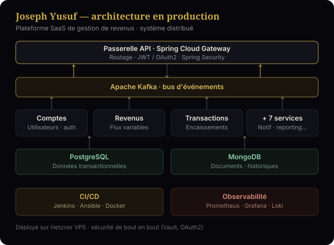
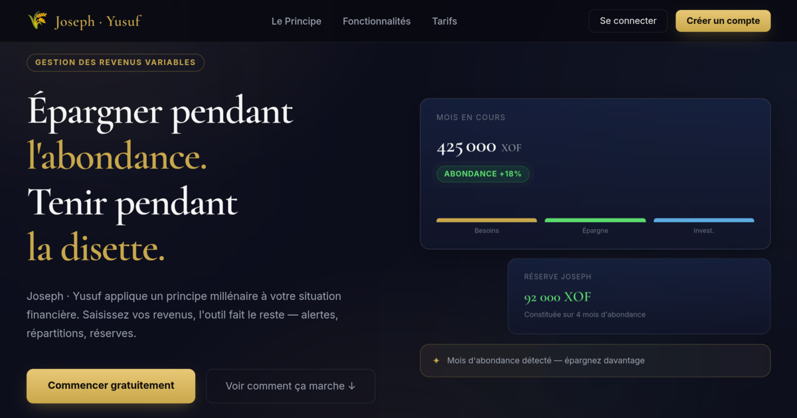

Étude de cas d'architecture
★ PROJET PHARE
● ARCHITECTURE MICROSERVICES
Joseph Yusuf — Plateforme SaaS de gestion de revenus
Plateforme de gestion de revenus que j'ai architecturée de bout en bout : 10 microservices Spring Boot, messagerie Kafka, PostgreSQL, livraison automatisée (Jenkins/Ansible) et supervision continue (Prometheus/Grafana/Loki), déployée sur VPS. Ce projet démontre ma capacité à concevoir un système distribué complet — pas seulement à coder une page, mais à penser une architecture qui tient la charge.


Architecture conçue & déployée
- 10 microservices Spring Boot 3 orchestrés via Eureka + Spring Cloud Gateway
- Frontends séparés admin et utilisateur, design system PrimeNG
- CI/CD complet : Jenkins multi-pipeline, SonarQube, déploiement Ansible
- Modèle SaaS : essai gratuit + abonnement payant + facturation automatisée
- Hébergement Hetzner VPS, monitoring custom, observabilité centralisée
10 microservices
Spring Boot 3
Spring Cloud
Angular 17
PrimeNG
PostgreSQL
Kafka
Redis
Jenkins
SonarQube
Ansible
Docker
Hetzner VPS